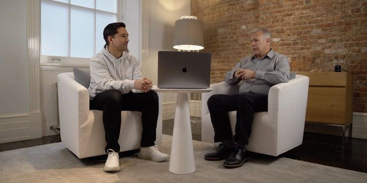

Phil Schiller ผู้อำนวยการอาวุโสฝ่ายการตลาดทั่วโลกได้ให้สัมภาษณ์เกี่ยวกับ MacBook Pro 16 รุ่นใหม่หลังเปิดมาพร้อมกับกลับไปใช้คีย์บอร์ดแบบ Scissor หรือขากรรไกรแบบรุ่นเก่า ไม่ได้ใช้แบบปีกผีเสื้อหรือ Butterfly แล้ว โดย Shciller ระบุว่า Apple ทำตามความเรียกร้องขอวงผู้ใช้งานที่ต้องการคีย์บอร์ดแบบ Scissor มากกว่า
นอกจากประเด็นเรื่องคีย์บอร์ดแล้ว Jonathan Morrison, YouTuber ที่สัมภาษณ์ Phil Schiller ยังถามเรื่องพอร์ทต่าง ๆ อย่าง SD Card มีสิทธิที่จะกลับมาใน MacBook Pro อีกหรือไม่? ด้าน Phil Schiller ให้คำตอบว่า
บางที มันคงไม่กลับมาแล้ว
Schiller บอกว่า บางอย่างมันเป็นเรื่องของอนาคต ทุกสิ่งทุกอย่างอาจเปลี่ยนแปลงได้ แต่เราใช้เวลาไปกับการสำรวจความคิดเห็นของผู้ใช้งานเกี่ยวกับ MacBook (Pro) “อะไรคือสิ่งที่ผู้ใช้งานต้องการ” แน่นอนว่าพวกเขาต้องการพอร์ทต่าง ๆ กลับมาอย่าง USB-A, SD Card, HDMI และอื่น ๆ อีกหลายอย่าง
แต่สิ่งที่เรามองเห็นว่าดีที่สุด และเลือกนำมาใส่ MacBook Pro คือพอร์ท USB-C (Thunderbolt) เพราะมันจะสามารถแสดงประสิทธิภาพการใช้งานได้ดีที่สุด ซึ่งพอร์ทต่าง ๆ เหล่านั้นสามารถใช้ตัวแปลงแทนได้ จากการใช้เวลาสำรวจสิ่งต่าง ๆ เราเชื่อว่าเราได้เลือกสิ่งที่ดีที่สุดให้ผู้ใช้งานของเราแล้ว
ประเด็นที่น่าสนใจที่สุดคือเรื่องของราคา จากข่าวลือก่อนหน้านี้เผยว่า MacBook Pro 16 จะมีราคาที่แพงขึ้น แต่เมื่อเปิดตัวแล้วพบว่ามันมีราคาที่ถูกลงกว่าเดิมมาก Phil Schiller ตอบประเด็นนี้ว่า “ความตั้งใจของเราคือการนำรุ่น 16 นิ้วมาแทนที่รุ่น 15 นิ้ว เราพยายามเพิ่มประสิทธิภาพสิ่งต่าง ๆ ในราคาเท่าเดิม”